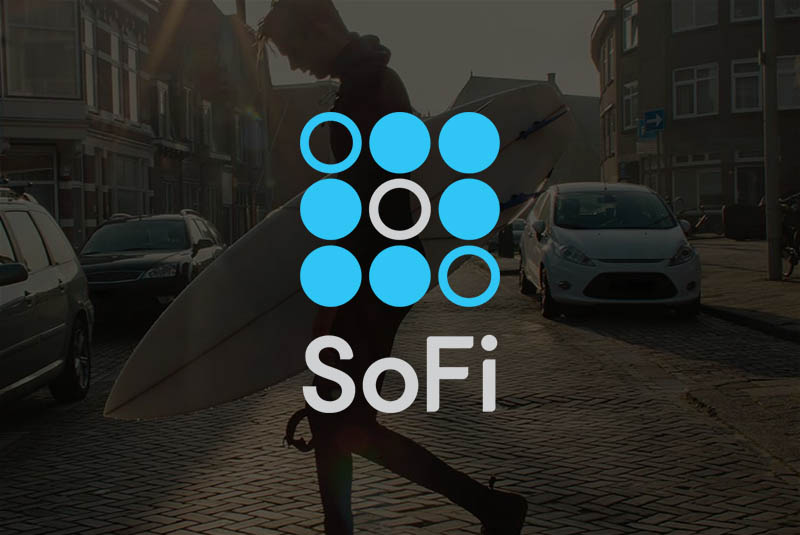

Sofi vs Prosper

Sofi vs Prosper
Interest rates
APRs for SoFi’s fixed rate personal loan start at 5.49%, and variable rate personal loan APRs start at 5.19% when you sign up for autopay.
If you’re interested in rates for any of SoFi’s other loan types, check out our reviews for student loan refinancing, parent loans and mortgages.
If you’re interested in rates for any of SoFi’s other loan types, check out our reviews for student loan refinancing, parent loans and mortgages.
Funding speed
You can get personalized rates in as little as two minutes. SoFi’s application requires the standard information needed for a personal loan — contact, personal, employment and income information and documentation. A few business days after the application review is complete and the agreement is accepted, you’ll receive your funds by direct deposit.
Reputation
With a solid 9.6 out of 10 from 743 reviews on Trustpilot, SoFi has an excellent reputation. Reviewers repeatedly report on SoFi’s general ease of use, speed of funding and professionalism.
Lending limits
Minimum: $5,000
Maximum: $100,000
Maximum: $100,000
Fees
You won’t pay origination or prepayment fees for a personal loan with SoFi. Late payments are assessed if your payment is more than 15 days overdue. The fee is the lesser of $5 or 4% of your payment due.
Interest rates
With Prosper, the APR you’re ultimately offered can range anywhere from 5.99% to 36.00%. Prosper uses seven rating tiers to determine your interest rate range. AA is the highest tier, where your interest rate can fall anywhere from 5.99% to 15.00%.
Reputation
Prosper holds a score of 7.3 out of 10 with Trustpilot over 49 reviews. The reputation falls in the great range, with users giving high accolades to Prosper’s ease of use.
Lending limits
Minimum: $2,000
Maximum: $35,000
Maximum: $35,000
Fees
Prosper won’t hit you with prepayment fees, but you will pay an origination fee that represents 1% to 5% of the borrowed amount. The percentage, like the interest rates, are based on your Prosper Rating. Other fees include $5 for check payments, $15 or 5% of your unpaid amount for late payments and $15 for insufficient funds or returned payments.
Funding speed
You’ll be able to get your preapproved rates in just a few minutes. From there, you’ll need to complete a full application with verified documents. Prosper typically provides your final loan offer within seven days and disburses funds shortly after your acceptance.
SoFi won four out of five features. Is this legit?
Yes. Our analysis is based on both lenders’ stated APR ranges, loan amounts and listed fees. Reputation is judged from an outside source that gathers user reviews. Keep in mind that SoFi has stricter eligibility requirements and evaluates multiple factors including your credit score, employment history, income and more. You must have good to excellent credit to qualify.